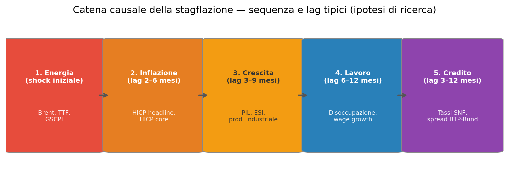
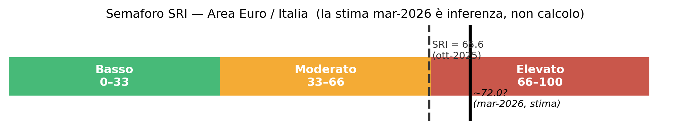
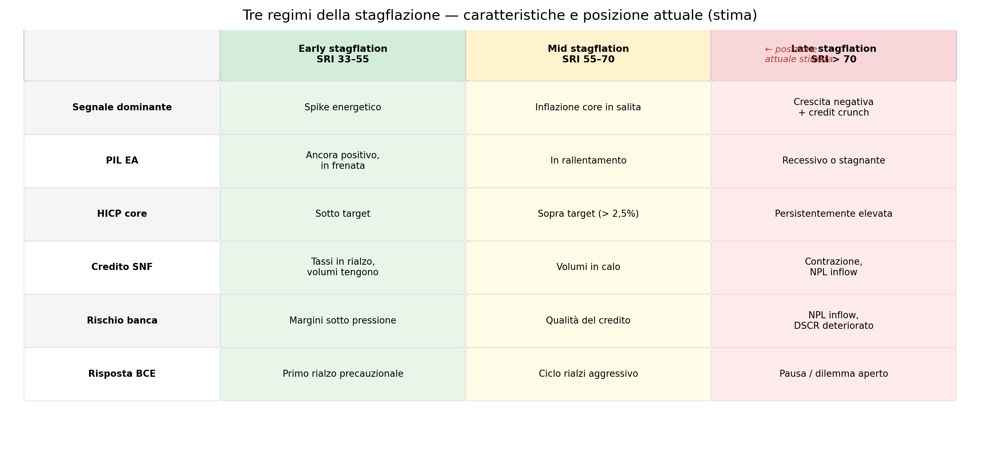
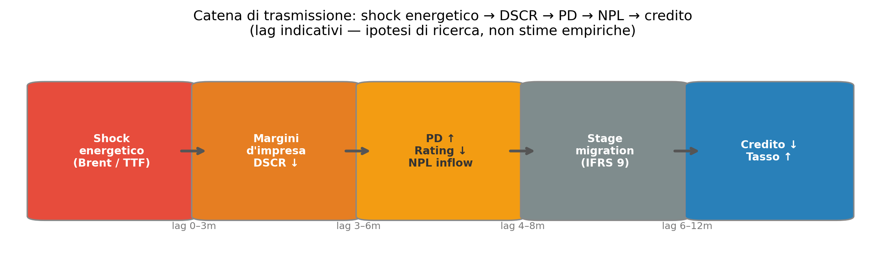
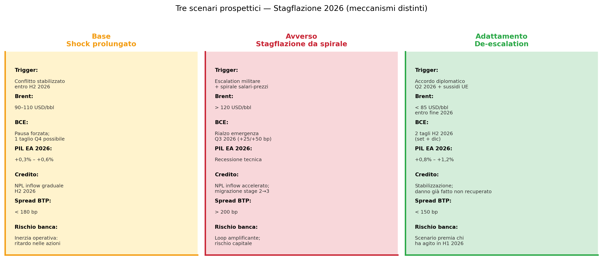

Stagflazione 2026: anatomia di uno scenario attivo
Framework diagnostico, classificazione dei rischi e scenari prospettici per il sistema bancario italiano
Stagflazione
Inflazione
Scenari
Il documento aggiorna il framework stagflazionistico al regime attuale (marzo 2026): con il Brent stabilmente sopra i 100 USD/barile dopo l’escalation nel Golfo Persico e le banche centrali nell’impossibilità di agire in modo direzionale, lo scenario non è più prospettico ma operativo.
Paolo Volterra ![]()
Sommario
Il documento aggiorna il framework stagflazionistico al regime attuale (marzo 2026): con il Brent stabilmente sopra i 100 USD/barile dopo l’escalation nel Golfo Persico e le banche centrali nell’impossibilità di agire in modo direzionale, lo scenario non è più prospettico ma operativo. Il documento classifica esplicitamente fatti, interpretazioni e assunzioni; identifica cinque categorie di rischio con orizzonte, trigger e fragilità; costruisce tre scenari prospettici con meccanismi distinti (base, avverso, adattamento); e deriva implicazioni operative per ALCO, pricing del credito corporate ed early warning IFRS 9.
Parole chiave
stagflazione, inflazione, crescita, SRI, ARDL, rischio credito, DSCR, NPL, IFRS9, ALCO, Area Euro, Italia, BCE, Fed, scenari
1 Executive Summary
Il contesto è cambiato dal primer v1 (ottobre 2025). A marzo 2026, con Brent stabilmente sopra i 100 USD/barile dopo l’escalation nel Golfo Persico e la Fed che segnala zero tagli per il 2026, lo scenario stagflazionistico è il regime operativo corrente. Interpretazione: lo SRI aggiornato supera verosimilmente la soglia di 70 — zona rossa — sebbene la stima definitiva richieda dati HICP e disoccupazione EA di febbraio 2026, non ancora disponibili.
Il dilemma di politica monetaria è ora bilaterale. La Fed è in pausa obbligata (crescita Q4 2025 rivista a +0,7% annualizzato, core PCE al 3,1%, payroll febbraio −92.000). La BCE ha ribaltato orientamento in venti giorni: da possibili tagli a possibile rialzo se il Brent restasse sopra i 100 USD. I futures Euribor dicembre 2026 prezzano tassi al 2,4% contro il 2% attuale. Assunzione: questa dinamica vale per i prossimi 6–12 mesi; un rapido allentamento energetico cambierebbe il quadro.
La catena causale è identificabile e già parzialmente attivata. Il meccanismo Energia → prezzi → crescita → credito si articola in cinque blocchi con lag stimati — non ancora misurati empiricamente — di 2–12 mesi. Il blocco credito mostra segnali di early activation: tassi SNF italiani su nuovi prestiti tra i più alti dal 2012 (Bankit MIR0100, Q4 2025). Assunzione critica: il lag 6–12 mesi è ipotesi di ricerca del modello ARDL in fase di stima, non risultato empirico.
Tre rischi principali. (1) Credito: deterioramento DSCR nelle PMI energivore con NPL inflow atteso H2 2026 – H1 2027; (2) Concentrazione: Mezzogiorno e distretti industriali energivori esposti sproporzionatamente; (3) Modello: sistemi IFRS 9 calibrati su campioni pre-2022 potrebbero sottostimare le ECL forward-looking.
Tre scenari prospettici. Base (shock prolungato): Brent 90–110 USD, BCE in pausa, NPL inflow graduale H2 2026. Avverso (spirale): escalation + spirale salari-prezzi, recessione tecnica EA, credit crunch PMI, NPL inflow accelerato. Adattamento (de-escalation): accordo diplomatico Q2 2026, sussidi UE, BCE taglia due volte a H2 2026.
Implicazione sistemica principale. Il rischio non è solo che la stagflazione si materializzi pienamente — è che il sistema bancario reagisca con ritardo strutturale di 6–9 mesi rispetto ai segnali energetici. La finestra per agire su pricing, stage allocation e politiche creditizie è aperta ora.
2 Contesto e motivazione
2.1 Da scenario prospettico a regime attivo
Il documento precedente (stagflazione_primer v1, ottobre 2025) descriveva la stagflazione come rischio in costruzione, con SRI a 65,6 — al limite superiore della zona moderata. A marzo 2026 il quadro si è modificato in modo materiale su tre dimensioni.
Fatti osservabili: il Brent ha superato i 100 USD/barile in seguito all’escalation nel Golfo Persico, con Goldman Sachs che ha rivisto al rialzo le previsioni per il biennio 2026–2027. La Fed nel dot plot del 18 marzo 2026 ha segnalato potenzialmente zero tagli per il 2026, con il core PCE di gennaio 2026 al 3,1% e la crescita Q4 2025 rivista a +0,7% annualizzato. La BCE, che tre settimane prima si preparava a possibili ulteriori tagli, ha invertito orientamento verso possibili rialzi se il Brent restasse strutturalmente elevato.
Interpretazione: queste tre variazioni convergono a indicare che il regime stagflazionistico — coesistenza operativa di inflazione sopra target e crescita sotto potenziale con banche centrali incapaci di agire in modo direzionale — è già attivo. La distinzione tra rischio prospettico e regime attivo è rilevante per le decisioni operative bancarie: non si tratta di prepararsi, ma di gestire.
2.2 Perché questo episodio è strutturalmente diverso dagli anni Settanta
L’analogia con gli anni Settanta — ricorrente nella stampa finanziaria e in alcuni report di mercato — è euristicamente utile ma va maneggiata con cautela.
Le somiglianze strutturali sono reali: shock energetico esogeno, banche centrali in ritardo sulla diagnosi, trasmissione ai prezzi core con lag, deterioramento del potere d’acquisto reale. Fatto verificabile: nei picchi inflazionistici 1974 e 1979, oro e commodity hanno registrato rendimenti straordinari mentre le obbligazioni a lunga scadenza mostravano rendimenti reali negativi (fonte: dati BofA citati in IN/Stagflazione-e-portafogli.md).
Le differenze strutturali sono però altrettanto rilevanti. Il debito pubblico globale è oggi incomparabilmente più alto rispetto agli anni Settanta, riducendo lo spazio di manovra fiscale e aumentando la sensibilità ai rialzi dei tassi. La quota di energia fossile sul PIL delle economie avanzate è calata, anche se la dipendenza rimane elevata per specifici settori manifatturieri. Il sistema bancario europeo è vincolato da requisiti prudenziali (BRRD, CRR3, IFRS 9) che rendono i meccanismi di trasmissione al deterioramento creditizio più rapidi e formalmente codificati.
Assunzione esplicita: questa analisi assume che i meccanismi di trasmissione energetico-creditizia identificati sul campione 2010–2025 siano più rilevanti come benchmark prospettico rispetto ai parametri degli anni Settanta. Questa assunzione è contestabile, soprattutto per la dinamica delle aspettative di inflazione.
2.3 Il contesto italiano specifico
Fatti: la quota di PMI nel tessuto produttivo italiano è strutturalmente più alta che in Germania o Francia. Le PMI hanno minore capacità di copertura sui costi energetici, minore accesso a finanziamento alternativo al credito bancario, bilanci con leva finanziaria mediamente più elevata. Lo spread BTP-Bund si colloca in un range 120–170 bp (fine 2025), al di sotto delle soglie di allerta ma sensibile alle revisioni al rialzo dei tassi BCE.
Interpretazione: il sistema bancario italiano è esposto in modo non lineare alla sequenza Energia → DSCR → NPL, soprattutto nei settori e nelle aree geografiche più energivore.
3 Framework analitico
3.1 La catena causale come metodo diagnostico
La stagflazione non si identifica da un singolo indicatore. Va letta come una sequenza temporale in cui cinque blocchi si attivano in successione con lag tipici. Questo non è un modello stimato: è un framework diagnostico basato sulla letteratura e sull’evidenza descrittiva. Assunzione critica: i lag sono stabili tra episodi. Se variassero con il regime o con l’intensità energetica settoriale, i segnali di early warning potrebbero arrivare in anticipo o in ritardo.
| Blocco | Indicatori chiave | Soglia di allerta | Lag tipico | Fonte |
|---|---|---|---|---|
| 1. Energia | Brent (USD/bbl), TTF (EUR/MWh) | Brent > 100; TTF > 50 | 0 (leading) | FRED, ECB SDW |
| 2. Prezzi | HICP headline, HICP core (a/a) | Core > 2,5% | 2–6 mesi | Eurostat |
| 3. Crescita | PIL QoQ EA, ESI, prod. industriale IT | PIL < 0%; ESI < 95 | 3–9 mesi | Eurostat, FRED |
| 4. Lavoro | Disoccupazione EA/IT, wage growth | Disoc EA > 7%; wage > 4% | 6–12 mesi | Eurostat, ECB |
| 5. Credito | Tasso SNF IT, Δ% prestiti SNF, spread BTP | Tasso > 5,5%; spread > 200 bp | 3–12 mesi | Bankit, FRED |
3.2 Lo Stagflation Risk Index (SRI)
\[ \text{SRI} = \text{norm}_{0\text{–}100}\!\Bigl( 0{,}25 \cdot z(\text{Brent}) + 0{,}25 \cdot z(\text{HICP core}) - 0{,}20 \cdot z(\text{PIL}_{t/t}) + 0{,}15 \cdot z(\text{disoc}_{EA}) + 0{,}15 \cdot z(\text{tasso SNF}) \Bigr) \]
dove \(z(\cdot)\) è lo z-score su finestra mobile 120 mesi (min. 36). I pesi sono fissi, calibrati su giudizio esperto, non su stima econometrica. Limite esplicito: struttura lineare a pesi fissi; non cattura la regime-dependence del ciclo (in early stagflation il peso energia dovrebbe essere più alto; in late stagflation il credito e il lavoro). Il valore di riferimento (ottobre 2025: 65,6) va aggiornato quando i dati marzo 2026 saranno disponibili.

3.3 I tre regimi della stagflazione
La stagflazione non è un evento puntuale ma un processo che attraversa tre fasi. Riconoscere il regime è determinante per calibrare le azioni operative.

4 Classificazione esplicita dei rischi
Per ogni rischio: categoria, orizzonte temporale, meccanismo di trasmissione, trigger, fragilità dell’analisi.
4.1 Rischio di credito
Orizzonte: breve-medio (6–18 mesi, H2 2026 – H1 2027).
Lo shock energetico comprime i margini operativi delle imprese energivore (manifatturiero pesante, ceramica, chimica, trasporti, agroalimentare). Il DSCR si deteriora perché i flussi di cassa calano mentre il servizio del debito resta fisso o sale con i tassi. Le banche registrano una progressiva migrazione da stage 1 a stage 2 e poi a stage 3 nel modello IFRS 9, con aumento delle ECL.
Trigger: Brent > 100 USD per più di 6 mesi consecutivi + tasso SNF medio > 5,5% + crescita EA < 0% per due trimestri.
Fragilità: il lag di 6–12 mesi è ipotesi non ancora stimata empiricamente. Se il lag fosse più corto (3–4 mesi), la finestra operativa potrebbe essere già parzialmente chiusa.

4.2 Rischio di concentrazione
Orizzonte: breve (3–9 mesi).
La trasmissione energetico-creditizia non è uniforme. I settori con la più alta intensità energetica (C20 chimica, C23 ceramica/vetro, C24 siderurgia, H trasporti) e le aree geografiche dove sono concentrati (distretti industriali del Nord-Est, distretto ceramico, petrolchimico) subiscono un impatto sproporzionato. Il Mezzogiorno, con PMI strutturalmente più fragili, è esposto per canali diversi ma altrettanto rilevanti (liquidità, capitale circolante).
Trigger: deterioramento del portafoglio in due o più settori energivori simultaneamente; o concentrazione territoriale > 30% degli impieghi in aree con intensità energetica media alta.
Fragilità: i dati Bankit disponibili (TDB10295, TRI30021) consentono la segmentazione per settore e provincia, ma non sono stati ancora elaborati disaggregatamente in questa analisi.
4.3 Rischio regolamentare
Orizzonte: medio (12–24 mesi).
L’applicazione più stringente delle linee guida EBA sulla gestione dei crediti in bonis (stage 2 triggers) e l’entrata in vigore di CRR3 aumentano la sensibilità dei requisiti di capitale alle variazioni macro. In un regime stagflazionistico, le autorità potrebbero richiedere buffer aggiuntivi (Pillar 2 Guidance) proprio quando la redditività è sotto pressione.
Trigger: ispezione regolamentare che evidenzia inadeguatezza dei modelli IFRS 9; o attivazione di stress test BCE/EBA con scenario stagflazionistico esplicito.
4.4 Rischio di modello
Orizzonte: trasversale.
I modelli di PD, LGD e stage allocation calibrati sul periodo 2010–2021 — tassi bassi e prezzi energetici moderati — introducono un rischio di sottostima sistematica degli ECL nel regime 2026.
Trigger: inizio di NPL inflow superiore alle stime ECL del portafoglio; o backtesting negativo sulle previsioni PD per le categorie energivore.
4.5 Rischio sistemico
Orizzonte: medio (6–18 mesi).
Se la BCE fosse costretta a effettuare rialzi in un contesto di crescita negativa, lo spread BTP-Bund potrebbe allargarsi verso e oltre i 200 bp, riattivando il loop sovrano-bancario già visto nel 2011–2012. L’efficacia del TPI in un contesto in cui la BCE stessa dovrebbe alzare i tassi — riducendo lo spazio per acquisti di titoli periferici — non è stata ancora testata.
Trigger: annuncio di rialzo BCE + crescita EA negativa + spread BTP > 200 bp per due mesi consecutivi.
5 Tre scenari prospettici
Gli scenari hanno meccanismi distinti — non sono semplici variazioni di intensità. Assunzione comune: la struttura del sistema bancario italiano rimane sostanzialmente invariata nell’orizzonte considerato (12–18 mesi).

Scenario base — Lo shock energetico rimane prolungato ma non si intensifica. Il Brent oscilla tra 90 e 110 USD. La BCE resta ferma nella prima metà del 2026, con possibilità di un taglio precauzionale a Q4. La crescita EA si assesta tra +0,3% e +0,6%, evitando la recessione tecnica. L’NPL inflow è graduale a partire da H2 2026, concentrato nei settori energivori. Rischio principale di questo scenario: l’inerzia operativa. La situazione è abbastanza “confortante” da ritardare le azioni preventive nelle banche, perdendo la finestra anticipatoria.
Scenario avverso — Il conflitto si intensifica nella seconda metà del 2026. Il Brent supera i 120 USD. In Germania e nei Paesi Bassi si avvia una spirale salariale (aumenti > 5% a/a). Le aspettative EA superano il 4%. La BCE è costretta a un rialzo di emergenza nel Q3 2026 nonostante la crescita negativa. L’area euro entra in recessione tecnica. Il meccanismo di feedback — credito si contrae → crescita peggiora → default aumentano → credito si contrae ulteriormente — rende questo scenario auto-amplificante. Una volta innescato, è molto più difficile da interrompere.
Scenario di adattamento — Un accordo diplomatico entro Q2 2026, combinato con un piano UE di sussidi energetici, allenta la pressione. Il Brent scende sotto gli 85 USD entro fine 2026. La BCE può effettuare due tagli a H2 2026. La crescita EA risale verso +1,0–1,2% per il 2027. Le banche che hanno anticipato il deterioramento nella H1 2026 si trovano in posizione più robusta. Rischio principale: costruire la pianificazione su questo scenario prima di avere segnali diplomatici concreti, ritrovandosi nell’avverso.
6 Implicazioni operative
6.1 ALCO — Asset & Liability Management
Il trade-off principale è tra protezione del margine di interesse a breve e esposizione al rischio di qualità del credito a medio termine. In un regime di tassi elevati, il margine di interesse tende a espandersi nel breve — soprattutto per le banche con portafoglio a tasso variabile. Questo può mascherare il deterioramento in corso del portafoglio.
Il framework SRI + lag stimati suggerisce che, con Brent stabilmente sopra i 100 USD, il sistema bancario è verosimilmente a 6–9 mesi dalla materializzazione del deterioramento creditizio. La finestra per agire su funding mix, duration dell’attivo e composizione settoriale del portafoglio è aperta ora, non quando i dati di deterioramento saranno visibili nei bilanci.
Il segnale operativo da monitorare è la velocità con cui i tassi sui nuovi prestiti a SNF si distaccano dal DFR BCE: se lo spread bancario si allarga, il mercato sta già incorporando il deterioramento atteso.
6.2 Pricing del credito corporate
Il framework consente di identificare i settori con la maggiore probabilità di deterioramento del DSCR prima che emerga nei rating interni. I settori prioritari per revisione degli spread: manifatturiero energivoro (C20, C23, C24), trasporti e logistica (H), agroalimentare ad alto consumo di gas (parte di C10–C11).
Il trade-off è tra competitività commerciale (spread più alti riducono la domanda) e correttezza del pricing per il rischio (spread inadeguati creano selezione avversa). In uno scenario di stress energetico prolungato, il secondo rischio domina il primo.
Assunzione critica: questa logica vale per le nuove erogazioni. Per il portafoglio esistente a tasso fisso la finestra è più limitata e richiede strumenti diversi (covenant, revisione delle linee).
6.3 Early warning e gestione IFRS 9
La catena Energia → DSCR → PD → Stage migration è direttamente integrabile nei modelli di stage allocation. Lo strumento è il forward-looking adjustment (overlay macro): sovrascrivere il modello storico con una correzione basata sullo scenario macro attuale.
Un trigger operativamente verificabile: se il Brent supera il +30% a/a per tre mesi consecutivi, attivare una revisione del staging per le esposizioni verso i settori energivori. Il lag stimato di 6–9 mesi significa che questo trigger deve essere attivato prima che la PD storica mostri il deterioramento.
Il principale rischio di governance: asimmetria delle conseguenze. Se lo scenario base si materializza, l’overlay aumenta le ECL (impatto sul patrimonio); se si materializza lo scenario di adattamento, l’overlay era cautelativo ma non necessario. Dichiarare esplicitamente le assunzioni dello scenario usato per l’overlay è un requisito di trasparenza verso auditor e vigilanza.
6.4 Connessione con il nowcasting
Il modello ARDL in fase di stima (ardl_stagflazione.ipynb) permetterà, una volta calibrato, di aggiornare le previsioni del tasso creditizio mensile non appena i prezzi energetici (disponibili in tempo reale) vengono osservati — senza attendere il dato Bankit con il suo ritardo tipico di 45 giorni. Questo è il ruolo del blocco fill_ragged() in macro_dashboard/nowcast.py.
7 Limiti dell’analisi
Dati: lo SRI (65,6, ottobre 2025) non è aggiornato; l’affermazione che superi ~72 a marzo 2026 è un’inferenza, non un calcolo. I dati Bankit hanno un ritardo di 30–45 giorni. L’analisi è aggregata a livello nazionale, senza disaggregazione settoriale e territoriale.
Metodologici: i lag di 6–12 mesi derivano dalla letteratura e dal giudizio esperto, non da stima econometrica su questo campione. Il modello ARDL (ardl_stagflazione.ipynb) è in fase di implementazione. L’SRI usa pesi fissi in struttura lineare.
Causali: il documento identifica correlazioni e meccanismi plausibili, non relazioni causali verificate. Il confronto con gli anni Settanta è euristico e potenzialmente fuorviante per le differenze strutturali. Non è incorporata la politica fiscale italiana (es. Fondo di Garanzia, misure di sostegno energetico).
Non coperti: effetti di secondo ordine sulle famiglie; impatto sul portafoglio titoli di Stato delle banche; dinamica dei mercati finanziari.
Obiezione academic reviewer: il lag 6–12 mesi è presentato in modo sufficientemente ambiguo da essere confuso con un fatto accertato. La sezione econometrica descrive una specificazione non ancora stimata. Non viene citato nessuno studio recente (2023–2025) che abbia stimato un lag analogo per l’area euro post-2020.
8 Criticità residue e vulnerabilità aperte
8.1 Rischi non mitigabili
L’opacità del lag effettivo è la vulnerabilità più strutturale. Se il lag fosse già scaduto, le banche scoprirebbero il problema nei dati di bilancio Q3–Q4 2026, senza la possibilità di aver agito preventivamente. Non esiste evidenza disponibile nei dati pubblici che permetta di escludere questo scenario.
La spirale salari-prezzi, una volta innescata, non si interrompe rapidamente. Il rischio di credito che ne deriva non è più solo un rischio di cash flow per le imprese, ma un rischio di ristrutturazione sistemica.
8.2 Zone di incertezza strutturale
La funzione di reazione BCE in uno scenario di inflazione > 3% con crescita negativa non è osservabile ex ante. L’efficacia del TPI in un contesto dove la BCE stessa potrebbe dover alzare i tassi è una zona di incertezza senza precedenti diretti.
La trasmissione settoriale eterogenea — cuore del rischio di concentrazione — è una zona di opacità per chi non dispone dei dati interni di portafoglio.
8.3 Dipendenze esterne
La geopolitica non è prevedibile con strumenti analitici standard. Il coordinamento fiscale europeo è storicamente lento e incompleto. Il comportamento delle grandi banche europee in scenario avverso potrebbe anticipare e amplificare il deterioramento delle condizioni di credito prima che i dati domestici lo segnalino.
8.4 Possibili shock esogeni non incorporati
Un evento di instabilità finanziaria non connesso all’energia potrebbe interagire con lo scenario stagflazionistico in modo non modellizzabile. Una risposta fiscale eccezionalmente rapida e di scala sufficiente (replay del SURE o del NGEU con focus energetico) potrebbe modificare radicalmente le traiettorie di tutti e tre gli scenari.
Dati aggiornati a marzo 2026.